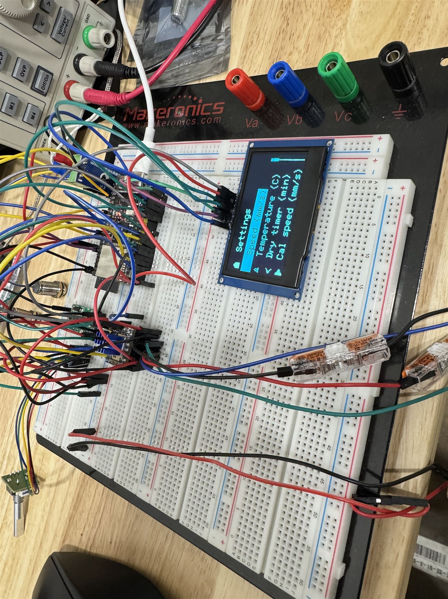
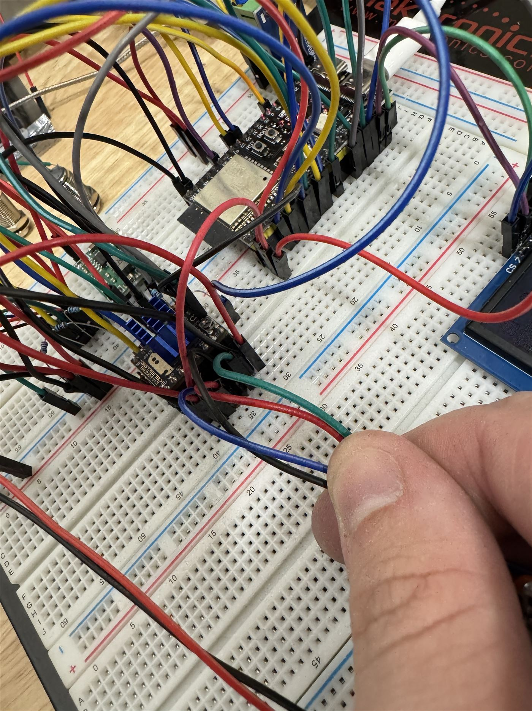

PCB Model Lab
A small archive of PCB designs, viewable as full-detail interactive 3D models exported from CAD. Each board loads on demand as a compressed glTF file. Drag to orbit, scroll to zoom. If a model cannot load, a static render takes its place. The same boards, converted to point clouds, appear on the home page project card.
DRAG TO ORBIT · SCROLL TO ZOOM · FULL CAD MODEL
01 / 06 · TEMPERATURE MEASUREMENT
4-Channel Thermocouple Interface
A four-channel thermocouple board for reading multiple temperature points during bench testing and machine experiments.
DRAG TO ORBIT · SCROLL TO ZOOM · FULL CAD MODEL
02 / 06 · MOTION CONTROL
Microstepper Driver
A stepper motor control board for smoother motion in small automation projects.
DRAG TO ORBIT · SCROLL TO ZOOM · FULL CAD MODEL
03 / 06 · MOTOR CONTROL
Dual DC Motor Driver
A two-channel motor driver board for small carts, rigs, and motion-control prototypes.
DRAG TO ORBIT · SCROLL TO ZOOM · FULL CAD MODEL
04 / 06 · MACHINE CONTROL
Paster Control Board
A machine controller for speed control, heater control, timing, and operator input on one board.
05 / 06 · DISPLAY PROTOTYPE
Dual OLED SPI Displays
Two OLED panels driven over SPI from one microcontroller. This was the display prototype for the paster control board's menu UI.

06 / 06 · BREADBOARD PROTOTYPE
Paster Controller Prototype
The controller before PCB layout: OLED menu, rotary input, speed setting, temperature setting, dry timer, and driver modules tested on the bench.

APPENDIX · WIRING
The Honest Version
The breadboard stage was messy, but it proved the control logic before the design was committed to copper.